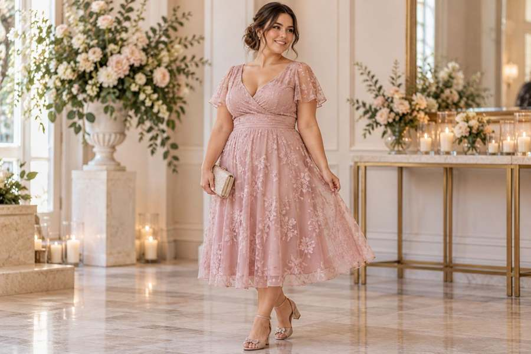

PERSPECTIVA PETITE
El vestido midi vuelve a dominar la moda, pero ¿funciona realmente en mujeres petite?
El largo midi suele aparecer en las listas de “prendas difíciles” para mujeres bajitas. Sin embargo, el problema casi nunca es el largo por sí solo: son la proporción, la cintura, el volumen y el punto exacto donde termina la falda los que cambian el resultado.
Durante años, buena parte de los consejos de moda dirigidos a mujeres petite repitieron la misma fórmula: evitar los largos midi, reducir el volumen y mostrar más pierna para “parecer más alta”. Es una recomendación sencilla, pero también limitada. La ropa no funciona igual en todos los cuerpos y una mujer petite puede ser delgada, curvy, plus size, tener piernas largas en proporción al torso o exactamente lo contrario.
El verdadero asunto es dónde termina la prenda
Un vestido midi puede terminar justo debajo de la rodilla, en la parte más ancha de la pantorrilla o varios centímetros más abajo. Los tres se venden como “midi”, pero producen efectos muy distintos. En una estatura baja, pequeñas diferencias de largo tienen mayor impacto porque ocupan una proporción mayor de la pierna.
Por eso, más que descartar la categoría, conviene observar el punto de caída. Cuando el dobladillo termina en una zona visualmente más estrecha de la pierna y la cintura está bien situada, la silueta suele sentirse más equilibrada.
La cintura importa más de lo que parece
La colocación de la cintura puede transformar completamente el mismo vestido. Una cintura ligeramente elevada tiende a alargar la línea inferior del cuerpo; una cintura demasiado baja puede hacer que el torso parezca más largo y las piernas más cortas. Los vestidos cruzados, entallados suavemente o con costuras bien posicionadas suelen ofrecer más control sobre esa proporción.
¿Y si además eres curvy?
Aquí es donde muchas reglas tradicionales dejan de ser útiles. Eliminar todo volumen puede hacer que una prenda pierda movimiento y que el ajuste se sienta demasiado rígido. En cuerpos petite con curvas, una falda con caída, una cintura definida y suficiente espacio en cadera puede funcionar mejor que una silueta extremadamente estrecha.

También importa la escala del estampado. Los motivos pequeños pueden integrarse con facilidad, pero eso no significa que los estampados grandes estén prohibidos. Un patrón más amplio puede funcionar si el resto del diseño mantiene una estructura clara y no compite con demasiados detalles a la vez.
El calzado no tiene que ser de tacón
La idea de que una mujer petite necesita tacones para usar un midi es otro mito que merece revisión. Un zapato plano de punta afinada, una bailarina sencilla o un calzado cercano al tono de la piel pueden mantener una línea visual limpia. Lo importante es observar el conjunto completo, no una pieza aislada.

Una tendencia que funciona cuando se adapta
El vestido midi no es automáticamente favorecedor ni desfavorecedor. Es una estructura que cambia según el cuerpo, el tejido, el largo y la manera en que se combina. Para una mujer petite, probar el mismo diseño en dos largos distintos puede revelar más que cualquier lista de reglas.
La moda petite resulta más interesante cuando deja de intentar hacer que todas las mujeres “parezcan más altas” y empieza a concentrarse en algo más útil: que la ropa se vea intencional, proporcional y cómoda en el cuerpo que realmente la lleva.
SIGUIENTE ARTÍCULO
Faldas midi en cuerpos petite: cuándo el largo favorece y cuándo domina el look
Seguimos la serie editorial analizando el largo, el volumen y la cintura en una de las siluetas más discutidas de la moda petite.
Leer el siguiente artículo →